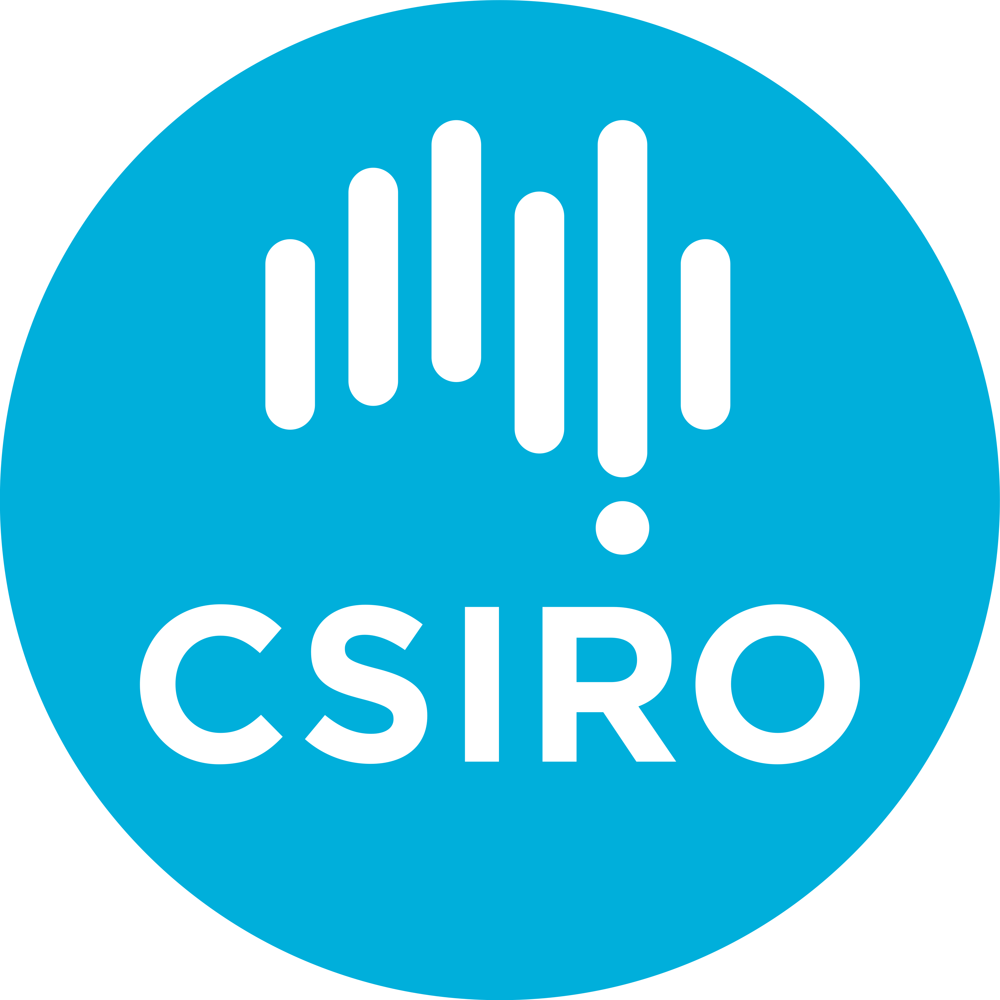
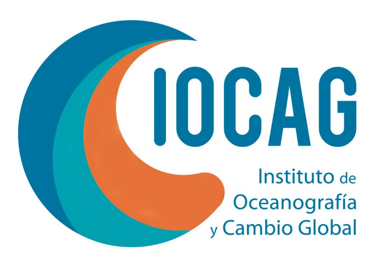
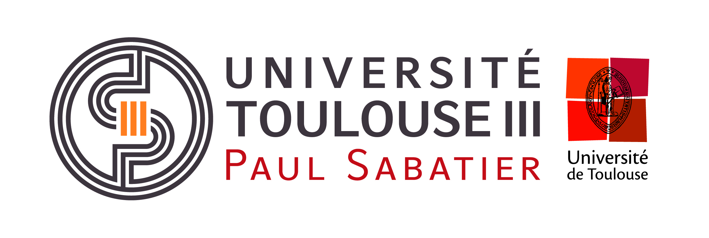

Current Position
IMEDEA - Instituto Mediterráneo de Estudios Avanzados
PhD in Physical Oceanography
UIB - Universitat de les Illes Balears
June 2024 - Present
Investigating mesoscale dynamics and Eddy Kinetic Energy variability in the Mediterranean Sea using satellite altimetry observations (Python, Linux).
Previous Positions
CSIRO - Commonwealth Scientific and Industrial Research Organisation
Master internship, 6 months
Hobart, Tasmania
March 2023 - October 2023
Supervisors: Benoit Legresy, Clothilde Langlais
Analysis of in-situ and model data to characterize sea level anomalies in Bass Strait, a calibration/validation site for satellite altimeters (Jason, Sentinel, SWOT) (Python, linux).

IOCAG - Instituto de Oceanografía y Cambio Global
Gap year internship, 6 months
Las Palmas de Gran Canaria, Canary Islands
September 2022 - February 2023
Supervisors: Santiago Hernández León, Airam Sarmiento Lezcano
Analysis of diel vertical migration and its contribution to the biological carbon pump using LADCP acoustic observations (Matlab).

UPC - Universitat Politècnica de Catalunya
Graduate internship, 2 months
Barcelona, Spain
June 2021 - August 2021
Supervisors: Manuel Espino Infantes, Agustín Sánchez-Arcilla Conejo
Numerical analysis of plastic dispersion along the Barcelona coastline using the PARCELS model forced by COAWST winds, waves, and currents, including model calibration, validation, and controlled numerical experiments (Python).
Studies and Master's degrees
University of Toulouse, Paul Sabatier
MSc Ocean, Atmosphere and Climate Sciences
2022 - 2023
Master’s program in Climate Dynamics providing training in atmospheric, oceanic, and climate processes, practical research methods, and data analysis.
